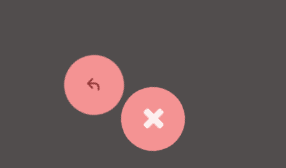
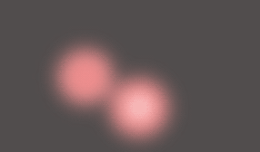

A while back, I wrote an article about creating a gooey effect with SVG filters. Today we'll take a look at some applications of that effect. blablabla
Please note that this effect is experimental and is only supported by modern browsers.
Let's take a look at one of the demos to see how it works:
To achieve this effect, we are going to be using SVG Filters which, despite the name, can be applied to regular DOM objects.
First, we have to define the filter inside an SVG object:
Then, we use the `filter` CSS property to apply the filter to the container of the elements we want to stick together:
-webkit-filter: url("#goo");
filter: url("../select.html#goo");
Please notice that in order to avoid a bug in Firefox, in which the object we apply the filter simply disappears, you should point to the absolute path of the filter rather than the relative.
Now, let's break down the filter. The first operation done by the filter is to blur the object, through the `feGaussianBlur` filter.

The next operation is a `feColorMatrix` filter. It is used in this case to increase the contrast of the alpha channel, which, combined with the blur, creates that blob effect:

Finally, to make the contents visible, we draw the original graphics of the object over the effect we just made, using it as a mask as well. To achieve that, we use the `feComposite` filter with the `atop` operator:
And we're done! Please be aware that this filter can be quite resource intensive, so you should refrain from applying it to large areas.
Conclusion